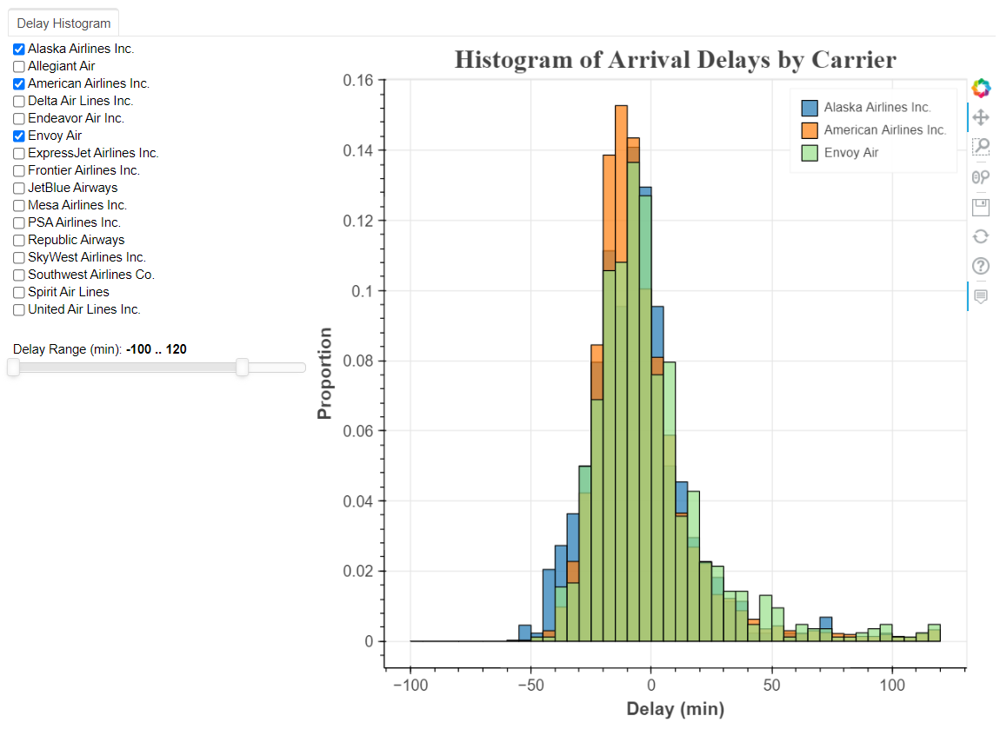
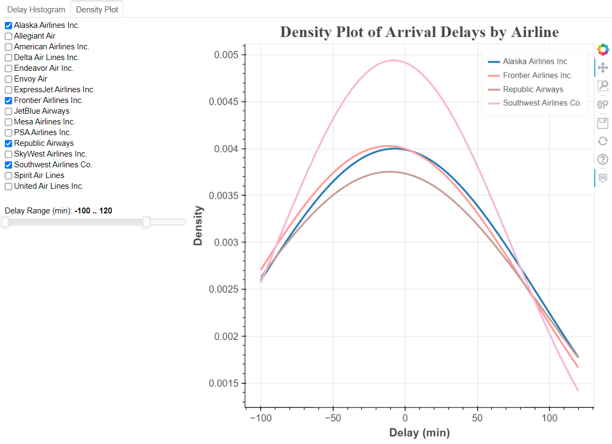
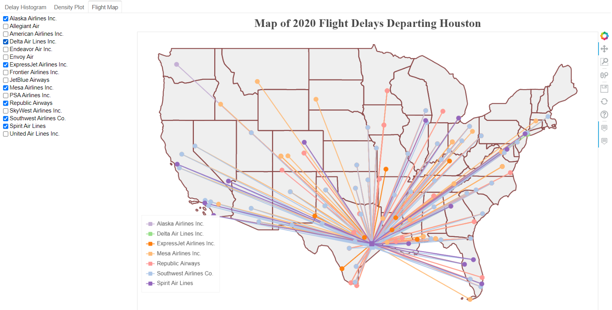
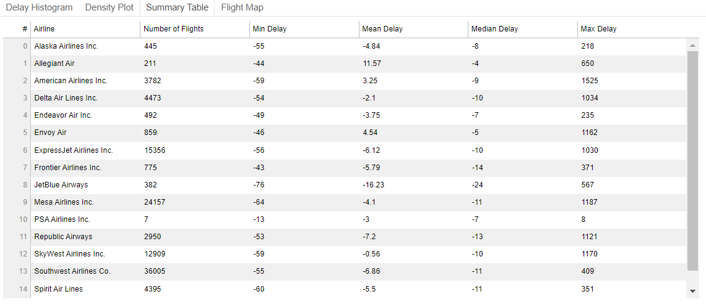

2020 Houston Flights Delay Dashboard
Summary: Create standalone Bokeh dashboard.
Check this blog on github.
Contents:
1 .Introduction
Bokeh is a Python library for creating interactive visualizations for modern web browsers. According to this blog, I collected information about all flights depart Houston in 2020 and created similar dashboard.
According to Bokeh’s introduction on widgets:
There are two ways to use a widget’s functionality:
-
A
CustomJScallback. This approach will work in standalone HTML documents or Bokeh server apps. -
Use
bokeh serveto start a Bokeh server and set up event handlers with.on_change(or for some widgets,.on_click).
This blog is about the practice with first method.
Another blog about the second method can be found in this blog: Deploy Bokeh Server App on Heroku.
Preview:
   
2. Data collecting and processing
2.1 Collecting data by anyflights
The anyflights package supplies a set of functions to generate air travel data (and data packages!) similar to nycflights13. With a user-defined year and airport, the anyflights function will grab data on
flights: all flights that departed a given airport in a given year and monthweather: hourly meterological data for a given airport in a given year and monthairports: airport names, FAA codes, and locationsairlines: translation between two letter carrier (airline) codes and namesplanes: construction information about each plane found in flights
It’s a R package, install the package and download the data in Rstudio:
- Download flights data:
HOUflights20_ <- anyflights(c("IAH", "HOU"), 2020)Note: the package has bug now, but it can download all 12 months flights data.
- Download airports data:
airports <- get_airports()
Write them to csv file.
2.2 Combining 12 months data
Note: check details in this notebook.
import glob
import pandas as pd
from tqdm.notebook import tqdm
select_cols = ['FlightDate', 'Reporting_Airline', 'Origin', 'OriginCityName', 'OriginStateName',
'Dest', 'DestCityName', 'DestStateName', 'CRSDepTime', 'DepTime', 'DepDelay',
'CRSArrTime', 'ArrTime', 'ArrDelay']
Hou_flights = pd.DataFrame(columns = select_cols)
for name in tqdm(names):
print(name)
df = pd.read_csv(name, usecols=select_cols)
df.dropna(inplace=True)
df = df[(df['Origin']=='IAH') | (df['Origin']=='HOU')]
Hou_flights = Hou_flights.append(df)
#add carrier name
carrier_names = pd.read_excel('airlines_code.xlsx')
Hou_flights = Hou_flights.merge(carrier_names, how = 'left', left_on = 'Reporting_Airline', right_on = 'carrier')
Hou_flights.to_csv('Hou_flights.csv', index=False)
2.3 Add logitude and latitude to Hou_flights
Note: check details in this notebook.
import glob
import pandas as pd
from tqdm.notebook import tqdm
#Add logitude and latitude to Hou_flights
Hou_flights = pd.read_csv('Hou_flights.csv')
air_columns = ['faa', 'lat', 'lon']
airport_orig = pd.read_csv("airports.csv", usecols = air_columns) #merge for origin location
airport_orig.rename(columns = {'lat': 'orig_lat', 'lon': 'orig_lon'}, inplace=True)
airport_dest = pd.read_csv("airports.csv", usecols = air_columns) #merger for destination location
airport_dest.rename(columns = {'lat': 'dest_lat', 'lon': 'dest_lon'}, inplace=True)
Hou_flights_location = Hou_flights.merge(airport_orig, how = 'left', left_on='Origin', right_on = 'faa')
Hou_flights_location = Hou_flights_location.merge(airport_dest, how = 'left', left_on='Dest', right_on = 'faa')
Hou_flights_location.drop(columns=['faa_x', 'faa_y'], inplace=True)
Hou_flights_location.to_csv('Hou_flights_location.csv', index=False)
2.4 Delay time statistics (arrival delay’s mean, max, min)
Note: check details in this notebook.
Hou_flights_location = pd.read_csv('Hou_flights_location.csv')
#group by carrier, destination,
#mean, max, min of arrival delay time, number of flights
df1 = Hou_flights_location.groupby(by=['name', 'Dest', 'Origin'])['ArrDelay'].agg(['mean', 'max', 'min']).reset_index()
counts = pd.DataFrame(Hou_flights_location.groupby(by=['name', 'Dest', 'Origin']).size().reset_index(name='counts'))
df1 = df1.merge(counts, how='left', on=['name', 'Dest', 'Origin'])
df1.rename(columns={'mean':'ArrDelay_mean', 'max':'ArrDelay_max', 'min':'ArrDelay_min'}, inplace=True)
df2 = Hou_flights_location[['name', 'Origin', 'OriginCityName',
'OriginStateName', 'Dest', 'DestCityName', 'DestStateName','orig_lat',
'orig_lon', 'dest_lat', 'dest_lon']]
arr_delay = df1.merge(df2, how='left', on=['name', 'Dest', 'Origin'])
arr_delay.drop_duplicates(inplace=True)
arr_delay.to_csv('arr_delay.csv', index=False)
3. Creating dashboard step by step
- Check details in this notebook.
-
Final dashboard.
Note: Download and open the html file in browser to explore the full function.
3.1 Histogram of Arrival Delays by Carrier
#import packages
import pandas as pd
import numpy as np
from bokeh.io import show, output_notebook, output_file
from bokeh.plotting import figure
from bokeh.models import HoverTool, ColumnDataSource, Panel, CustomJS, Column, Row, Select, FuncTickFormatter
from bokeh.models import CheckboxGroup, Slider, RangeSlider, Tabs, TableColumn, DataTable
from bokeh.palettes import Category20_16
# Gaussian kernel density estimate for density plot
from scipy.stats import gaussian_kde
# List of lists to single list
from itertools import chain
output_notebook()
output_file("Hou_flights_delay_plots.html")
# Load in flights and inspect
flights = pd.read_csv('../data/Hou_flights.csv', index_col=0)[['ArrDelay', 'Reporting_Airline', 'name']]
# print(flights.head())
# Available carrier list
available_carriers = list(flights['name'].unique())
# Sort the list in-place (alphabetical order)
available_carriers.sort()
print(available_carriers)
def make_dataset(carrier_list, range_start = -100, range_end = 120, bin_width = 5):
by_carrier = pd.DataFrame(columns=['proportion', 'left', 'right',
'f_proportion', 'f_interval',
'name', 'color'])
range_extent = range_end - range_start
# Iterate through all the carriers
for i, carrier_name in enumerate(carrier_list):
# Subset to the carrier
subset = flights[flights['name'] == carrier_name]
# Create a histogram with 5 minute bins
arr_hist, edges = np.histogram(subset['ArrDelay'],
bins = int(range_extent / bin_width),
range = [range_start, range_end])
# Divide the counts by the total to get a proportion
arr_df = pd.DataFrame({'proportion': arr_hist / np.sum(arr_hist), 'left': edges[:-1], 'right': edges[1:] })
# Format the proportion
arr_df['f_proportion'] = ['%0.5f' % proportion for proportion in arr_df['proportion']]
# Format the interval
arr_df['f_interval'] = ['%d to %d minutes' % (left, right) for left, right in zip(arr_df['left'], arr_df['right'])]
# Assign the carrier for labels
arr_df['name'] = carrier_name
# Color each carrier differently
arr_df['color'] = Category20_16[i]
# Add to the overall dataframe
by_carrier = by_carrier.append(arr_df)
# Overall dataframe
by_carrier = by_carrier.sort_values(['name', 'left'])
return ColumnDataSource(by_carrier)
def style(p):
# Title
p.title.align = 'center'
p.title.text_font_size = '20pt'
p.title.text_font = 'serif'
# Axis titles
p.xaxis.axis_label_text_font_size = '14pt'
p.xaxis.axis_label_text_font_style = 'bold'
p.yaxis.axis_label_text_font_size = '14pt'
p.yaxis.axis_label_text_font_style = 'bold'
# Tick labels
p.xaxis.major_label_text_font_size = '12pt'
p.yaxis.major_label_text_font_size = '12pt'
return p
def make_plot(data):
# Blank plot with correct labels
p = figure(plot_width = 700, plot_height = 700,
title = 'Histogram of Arrival Delays by Carrier',
x_axis_label = 'Delay (min)', y_axis_label = 'Proportion')
# Quad glyphs to create a histogram
p.quad(source = data, bottom = 0, top = 'proportion', left = 'left', right = 'right',
color = 'color', fill_alpha = 0.7, hover_fill_color = 'color', legend_field = 'name',
hover_fill_alpha = 1.0, line_color = 'black')
# Hover tool with vline mode
hover = HoverTool(tooltips=[('Carrier', '@name'),
('Delay', '@f_interval'),
('Proportion', '@f_proportion')],
mode='vline')
p.add_tools(hover)
# Styling
p = style(p)
return p
carrier_list=available_carriers
data = make_dataset(carrier_list, range_start = -100, range_end = 120, bin_width = 5)
#add range slider
source = ColumnDataSource(dict(proportion = [], left = [], right = [], color=[], name=[], f_proportion=[], f_interval=[]))
callback = CustomJS(args = {'source': source, 'data_source': data},
code = """
var data = data_source.data;
var s_data = source.data;
var select_vals = cb_obj.active.map(x => cb_obj.labels[x]);
console.log(select_vals);
//read original data
var proportion_data = data['proportion'];
var left_data = data['left'];
var right_data = data['right'];
var color_data = data['color'];
var name_data = data['name'];
var f_proportion_data = data['f_proportion'];
var f_interval_data = data['f_interval'];
//initialize source data
var proportion = s_data['proportion'];
proportion.length = 0;
var left = s_data['left'];
left.length = 0;
var right = s_data['right'];
right.length = 0;
var color = s_data['color'];
color.length = 0;
var name = s_data['name'];
name.length = 0;
var f_proportion = s_data['f_proportion'];
f_proportion.length = 0;
var f_interval = s_data['f_interval'];
f_interval.length = 0;
for (var i = 0; i < proportion_data.length; i++) {
if (select_vals.indexOf(name_data[i]) >= 0) {
proportion.push(proportion_data[i]);
left.push(left_data[i]);
right.push(right_data[i]);
color.push(color_data[i]);
name.push(name_data[i]);
f_proportion.push(f_proportion_data[i]);
f_interval.push(f_interval_data[i]);
}
}
source.change.emit();
console.log("callback completed");
""")
p = make_plot(source)
chkbxgrp = CheckboxGroup(labels = available_carriers, active=[])
chkbxgrp.js_on_change('active', callback)
range_slider = RangeSlider(start = -100, end = 180, value = (-100, 120), step = 5, title = 'Delay Range (min)')
range_slider.js_on_change('value',
CustomJS(args=dict(other=p.x_range),
code="""
other.start = this.value[0];
other.end = this.value[1];
""")
)
layout = Row(Column(chkbxgrp, range_slider), p)
tab_hist = Panel(child=layout, title = 'Delay Histogram')
tabs = Tabs(tabs=[tab_hist])
show(tabs)
 fig 1: Histogram of Arrival Delays by Carrier
fig 1: Histogram of Arrival Delays by Carrier
3.2 Density plot
# Load in flights and inspect
flights = pd.read_csv('../data/Hou_flights.csv', index_col=0)[['ArrDelay', 'Reporting_Airline', 'name']]
# print(flights.head())
# Available carrier list
available_carriers = list(flights['name'].unique())
# Sort the list in-place (alphabetical order)
available_carriers.sort()
print(available_carriers)
airline_colors = Category20_16
def make_kde_dataset(carrier_list, range_start = -100, range_end = 120, bandwidth = 5):
xs = []
ys = []
colors = []
labels = []
names = []
for i, carrier in enumerate(carrier_list):
subset = flights[flights['name'] == carrier]
subset = subset[subset['ArrDelay'].between(range_start, range_end)]
kde = gaussian_kde(subset['ArrDelay'], bw_method=bandwidth)
# Evenly space x values
x = np.linspace(range_start, range_end, 100)
# Evaluate pdf at every value of x
y = kde.pdf(x)
# Append the values to plot
xs.append(list(x))
ys.append(list(y))
# #store name for checkbox
# names.append(carrier)
# Append the colors and label
colors.append(airline_colors[i])
labels.append(carrier)
kernel_source = ColumnDataSource(data={'x': xs, 'y': ys, 'color': colors, 'label': labels})
return kernel_source
carrier_list = available_carriers
kde_data = make_kde_dataset(carrier_list)
def style(p):
# Title
p.title.align = 'center'
p.title.text_font_size = '20pt'
p.title.text_font = 'serif'
# Axis titles
p.xaxis.axis_label_text_font_size = '14pt'
p.xaxis.axis_label_text_font_style = 'bold'
p.yaxis.axis_label_text_font_size = '14pt'
p.yaxis.axis_label_text_font_style = 'bold'
# Tick labels
p.xaxis.major_label_text_font_size = '12pt'
p.yaxis.major_label_text_font_size = '12pt'
return p
def make_kde_plot(kde_src):
p = figure(plot_width = 700, plot_height = 700,
title = 'Density Plot of Arrival Delays by Airline',
x_axis_label = 'Delay (min)', y_axis_label = 'Density')
p.multi_line('x', 'y', color = 'color', legend_field = 'label',
line_width = 3,
source = kde_src)
# Hover tool with next line policy
hover = HoverTool(tooltips=[('Carrier', '@label'),
('Delay', '$x'),
('Density', '$y')],
line_policy = 'next')
# Add the hover tool and styling
p.add_tools(hover)
p = style(p)
return p
#add range slider
source = ColumnDataSource(dict(x = [], y = [], color = [], label=[]))
callback = CustomJS(args = {'source': source, 'data_source': kde_data},
code = """
var data = data_source.data;
var s_data = source.data;
var select_vals = cb_obj.active.map(x => cb_obj.labels[x]);
console.log(select_vals);
//read original data
var x_data = data['x'];
var y_data = data['y'];
var label_data = data['label'];
var color_data = data['color'];
//initialize source data
var x = s_data['x'];
x.length = 0;
var y = s_data['y'];
y.length = 0;
var label = s_data['label'];
label.length = 0;
var color = s_data['color'];
color.length = 0;
for (var i = 0; i < x_data.length; i++) {
if (select_vals.indexOf(label_data[i]) >= 0) {
x.push(x_data[i]);
y.push(y_data[i]);
label.push(label_data[i]);
color.push(color_data[i]);
}
}
source.change.emit();
console.log("callback completed");
""")
p = make_kde_plot(source)
chkbxgrp = CheckboxGroup(labels = available_carriers, active=[])
chkbxgrp.js_on_change('active', callback)
range_slider = RangeSlider(start = -100, end = 180, value = (-100, 120), step = 5, title = 'Delay Range (min)')
range_slider.js_on_change('value',
CustomJS(args=dict(other=p.x_range),
code="""
other.start = this.value[0];
other.end = this.value[1];
""")
)
layout = Row(Column(chkbxgrp, range_slider), p)
tab_density = Panel(child=layout, title = 'Density Plot')
tabs = Tabs(tabs=[tab_hist, tab_density])
show(tabs)
 fig 2: Density Plot of Arrival Delays by airline
fig 2: Density Plot of Arrival Delays by airline
3.3 Flight map
# Included data in Bokeh for map
from bokeh.sampledata.us_states import data as states
# Remove Alaska and Hawaii
if 'HI' in states: del states['HI']
if 'AK' in states: del states['AK']
# Put longitudes and latitudes in lists
xs = [states[state]['lons'] for state in states]
ys = [states[state]['lats'] for state in states]
# Formatted Flight Delay Data for map
map_data = pd.read_csv('../data/arr_delay.csv')
map_data.head()
print(f"map_data shape before drop Alaska and Hawaii: {map_data.shape}")
# map_data = map_data[(map_data.DestStateName != 'Alaska') & (map_data.DestStateName != 'Hawaii')]
map_data = map_data[(map_data['DestStateName']!='Alaska') & (map_data['DestStateName']!='Hawaii')]
print(f"map_data shape after drop: {map_data.shape}")
# Available carrier list
available_carriers = list(map_data['name'].unique())
# Sort the list in-place (alphabetical order)
available_carriers.sort()
print(available_carriers)
# Function to make a dataset for the map based on a list of carriers
def make_dataset(carrier_list):
# Subset to the carriers in the specified list
subset = map_data[map_data['name'].isin(carrier_list)]
# Dictionary mapping carriers to colors
color_dict = {carrier: color for carrier, color in zip(list(set(map_data['name'])),
Category20_16)}
# Lists of data for plotting
flight_x = []
flight_y = []
colors = []
carriers = []
counts = []
mean_delays = []
min_delays = []
max_delays = []
dest_loc = []
origin_x_loc = []
origin_y_loc = []
dest_x_loc = []
dest_y_loc = []
origins = []
dests = []
origin_citys = []
dest_citys = []
# Iterate through each carrier
for carrier in carrier_list:
# Subset to the carrier
sub_carrier = subset[subset['name'] == carrier]
# Iterate through each route (origin to destination) for the carrier
for _, row in sub_carrier.iterrows():
colors.append(color_dict[carrier])
carriers.append(carrier)
origins.append(row['Origin'])
dests.append(row['Dest'])
origin_citys.append(row['OriginCityName'])
dest_citys.append(row['DestCityName'])
# Origin x (longitude) and y (latitude) location
origin_x_loc.append(row['orig_lon'])
origin_y_loc.append(row['orig_lat'])
# Destination x (longitude) and y latitude (location)
dest_x_loc.append(row['dest_lon'])
dest_y_loc.append(row['dest_lat'])
# Flight x (longitude) locations
flight_x.append([row['orig_lon'],
row['dest_lon']])
# Flight y (latitude) locations
flight_y.append([row['orig_lat'],
row['dest_lat']])
# Stats about the particular route
counts.append(row['counts'])
mean_delays.append(row['ArrDelay_mean'])
min_delays.append(row['ArrDelay_min'])
max_delays.append(row['ArrDelay_max'])
# Create a column data source from the lists of lists
new_map_src = ColumnDataSource(data = {'carrier': carriers, 'flight_x': flight_x, 'flight_y': flight_y,
'origin_x_loc': origin_x_loc, 'origin_y_loc': origin_y_loc,
'dest_x_loc': dest_x_loc, 'dest_y_loc': dest_y_loc,
'color': colors, 'count': counts, 'mean_delay': mean_delays,
'origin': origins, 'dest': dests,
'min_delay': min_delays, 'max_delay': max_delays,
'origin_city':origin_citys, 'dest_city':dest_citys})
return new_map_src
carrier_list = available_carriers
new_map_data = make_dataset(carrier_list)
# Styling
def style(p):
# Title
p.title.align = 'center'
p.title.text_font_size = '20pt'
p.title.text_font = 'serif'
# Axis titles
p.xaxis.axis_label_text_font_size = '14pt'
p.xaxis.axis_label_text_font_style = 'bold'
p.yaxis.axis_label_text_font_size = '14pt'
p.yaxis.axis_label_text_font_style = 'bold'
# Tick labels
p.xaxis.major_label_text_font_size = '12pt'
p.yaxis.major_label_text_font_size = '12pt'
return p
def make_plot(map_src):
# Create the plot with no axes or grid
p = figure(plot_width = 1100, plot_height = 700, title = 'Map of 2020 Flight Delays Departing Houston')
p.xaxis.visible = False
p.yaxis.visible = False
p.grid.visible = False
# States are drawn as patches
patches_glyph = p.patches(xs, ys, fill_alpha=0.2, fill_color = 'lightgray',
line_color="#884444", line_width=2, line_alpha=0.8)
# Airline flights are drawn as lines
lines_glyph = p.multi_line('flight_x', 'flight_y', color = 'color', line_width = 2,
line_alpha = 0.8, hover_line_alpha = 1.0, hover_line_color = 'color',
legend_field = 'carrier', source = map_src)
# Origins are drawn as squares (all in NYC)
squares_glyph = p.square('origin_x_loc', 'origin_y_loc', color = 'color', size = 10, source = map_src,
legend_field = 'carrier')
# Destinations are drawn as circles
circles_glyph = p.circle('dest_x_loc', 'dest_y_loc', color = 'color', size = 10, source = map_src,
legend_field = 'carrier')
# Add the glyphs to the plot using the renderers attribute
p.renderers.append(patches_glyph)
p.renderers.append(lines_glyph)
p.renderers.append(squares_glyph)
p.renderers.append(circles_glyph)
# Hover tooltip for flight lines, assign only the l
hover_line = HoverTool(tooltips=[('Airline', '@carrier'),
('Number of Flights', '@count'),
('Average Delay', '@mean_delay{0.0}'),
('Max Delay', '@max_delay{0.0}'),
('Min Delay', '@min_delay{0.0}')],
line_policy = 'next',
renderers = [lines_glyph])
# Hover tooltip for origin and destination
hover_circle = HoverTool(tooltips=[('OriginAirport', '@origin'),
('OriginCity', '@origin_city'),
('DestAirport', '@dest'),
('DestCity', '@dest_city'),
],
renderers = [circles_glyph])
# Position the location so it does not overlap plot
p.legend.location = (10, 50)
# Add the hovertools to the figure
p.add_tools(hover_line)
p.add_tools(hover_circle)
p = style(p)
return p
# {'carrier': carriers, 'flight_x': flight_x, 'flight_y': flight_y,
# 'origin_x_loc': origin_x_loc, 'origin_y_loc': origin_y_loc,
# 'dest_x_loc': dest_x_loc, 'dest_y_loc': dest_y_loc,
# 'color': colors, 'count': counts, 'mean_delay': mean_delays,
# 'origin': origins, 'dest': dests,
# 'min_delay': min_delays, 'max_delay': max_delays,
# 'origin_city':origin_citys, 'dest_city':dest_citys})
source = ColumnDataSource(dict(carrier=[], flight_x=[], flight_y=[], origin_x_loc=[], origin_y_loc=[],
dest_x_loc=[], dest_y_loc=[], color=[], count=[], mean_delay=[],
origin=[], dest=[], min_delay=[], max_delay=[], origin_city=[],
dest_city=[]
))
callback_map = CustomJS(args = {'source': source, 'data_source': new_map_data},
code = """
var data = data_source.data;
var s_data = source.data;
var select_vals = cb_obj.active.map(x => cb_obj.labels[x]);
console.log(select_vals);
//read original data
var carrier_data = data['carrier'];
var flight_x_data = data['flight_x'];
var flight_y_data = data['flight_y'];
var origin_x_loc_data = data['origin_x_loc'];
var origin_y_loc_data = data['origin_y_loc'];
var dest_x_loc_data = data['dest_x_loc'];
var dest_y_loc_data = data['dest_y_loc'];
var color_data = data['color'];
var count_data = data['count'];
var mean_delay_data = data['mean_delay'];
var origin_data = data['origin'];
var dest_data = data['dest'];
var min_delay_data = data['min_delay'];
var max_delay_data = data['max_delay'];
var origin_city_data = data['origin_city'];
var dest_city_data = data['dest_city'];
//initialize source data
var carrier = s_data['carrier'];
carrier.length = 0;
var flight_x = s_data['flight_x'];
flight_x.length = 0;
var flight_y = s_data['flight_y'];
flight_y.length = 0;
var origin_x_loc = s_data['origin_x_loc'];
origin_x_loc.length = 0;
var origin_y_loc = s_data['origin_y_loc'];
origin_y_loc.length = 0;
var dest_x_loc = s_data['dest_x_loc'];
dest_x_loc.length = 0;
var dest_y_loc = s_data['dest_y_loc'];
dest_y_loc.length = 0;
var color = s_data['color'];
color.length = 0;
var count = s_data['count'];
count.length = 0;
var mean_delay = s_data['mean_delay'];
mean_delay.length = 0;
var origin = s_data['origin'];
origin.length = 0;
var dest = s_data['dest'];
dest.length = 0;
var min_delay = s_data['min_delay'];
min_delay.length = 0;
var max_delay = s_data['max_delay'];
max_delay.length = 0;
var origin_city = s_data['origin_city'];
origin_city.length = 0;
var dest_city = s_data['dest_city'];
dest_city.length = 0;
for (var i = 0; i < carrier_data.length; i++) {
if (select_vals.indexOf(carrier_data[i]) >= 0) {
carrier.push(carrier_data[i]);
flight_x.push(flight_x_data[i]);
flight_y.push(flight_y_data[i]);
origin_x_loc.push(origin_x_loc_data[i]);
origin_y_loc.push(origin_y_loc_data[i]);
dest_x_loc.push(dest_x_loc_data[i]);
dest_y_loc.push(dest_y_loc_data[i]);
color.push(color_data[i]);
count.push(count_data[i]);
mean_delay.push(mean_delay_data[i]);
origin.push(origin_data[i]);
dest.push(dest_data[i]);
min_delay.push(min_delay_data[i]);
max_delay.push(max_delay_data[i]);
origin_city.push(origin_city_data[i]);
dest_city.push(dest_city_data[i]);
}
}
source.change.emit();
console.log("callback completed");
""")
p = make_plot(source)
chkbxgrp = CheckboxGroup(labels = available_carriers, active=[])
chkbxgrp.js_on_change('active', callback_map)
layout = Row(chkbxgrp, p)
tab_map = Panel(child=layout, title = 'Flight Map')
tabs = Tabs(tabs=[tab_hist, tab_density, tab_map])
show(tabs)
 fig 3: Flight map
fig 3: Flight map
3.4 Table
# Load in flights and inspect
flights = pd.read_csv('../data/Hou_flights.csv', index_col=0)[['ArrDelay', 'Reporting_Airline', 'name']]
print(flights.head())
carrier_stats = flights.groupby('name')['ArrDelay'].describe()
carrier_stats = flights.groupby('name')['ArrDelay'].describe()
carrier_stats = carrier_stats.reset_index().rename(columns={'name': 'airline',
'count': 'flights',
'50%':'median'})
carrier_stats['mean'] = carrier_stats['mean'].round(2)
carrier_src = ColumnDataSource(carrier_stats)
table_columns = [TableColumn(field='airline', title='Airline'),
TableColumn(field='flights', title='Number of Flights'),
TableColumn(field='min', title='Min Delay'),
TableColumn(field='mean', title='Mean Delay'),
TableColumn(field='median', title='Median Delay'),
TableColumn(field='max', title='Max Delay')]
carrier_table = DataTable(source=carrier_src, columns=table_columns, width=1000)
tab_table = Panel(child = carrier_table, title = 'Summary Table')
tabs = Tabs(tabs=[tab_hist, tab_density, tab_table, tab_map])
show(tabs)
 fig 4: Table of arrival delay statistics by airline
fig 4: Table of arrival delay statistics by airline
3.5 Routes
# Load in flights and inspect
flights = pd.read_csv('../data/Hou_flights.csv', index_col=0)[['Origin', 'Dest', 'ArrDelay', 'name']]
print(flights.head())
def make_dataset(origin, destination):
# Subset to the selected route
subset = flights[(flights['Dest'] == destination) & (flights['Origin'] == origin)]
# Find the carriers who cover particular route
carriers = list(set(subset['name']))
# x is the delay, y is the airline
xs = []
ys = []
label_dict = {}
# Iterate through the unique carriers
for i, carrier in enumerate(carriers):
# Subset to the carrier
carrier_data = flights[flights['name'] == carrier]
# Append the index of the carrier as many times as there are flights
# Append the delays for the carrier
ys.append([i for _ in range(len(carrier_data))])
xs.append(list(carrier_data['ArrDelay']))
# Map the index to the carrier
label_dict[i]= carrier
xs = list(chain(*xs))
ys = list(chain(*ys))
new_plan_src = ColumnDataSource(data = {'x': xs, 'y': ys})
return new_plan_src, label_dict
def style(p):
# Title
p.title.align = 'center'
p.title.text_font_size = '20pt'
p.title.text_font = 'serif'
# Axis titles
p.xaxis.axis_label_text_font_size = '14pt'
p.xaxis.axis_label_text_font_style = 'bold'
p.yaxis.axis_label_text_font_size = '14pt'
p.yaxis.axis_label_text_font_style = 'bold'
# Tick labels
p.xaxis.major_label_text_font_size = '12pt'
p.yaxis.major_label_text_font_size = '12pt'
return p
def make_plot(src, origin, destination, label_dict):
p = figure(plot_width = 600, plot_height = 200, x_axis_label = 'Delay (min)',
y_axis_label = '',
title = 'Arrival Delays for Flights from %s to %s' % (origin, destination))
p.circle('x', 'y', source = src, alpha = 0.4,
color = 'navy', size = 15)
p.yaxis[0].ticker.desired_num_ticks = len(label_dict)
p.yaxis.formatter = FuncTickFormatter(code = """
var labels = %s;
return labels[tick];
""" % label_dict)
p = style(p)
return p
origins = list(set(flights['Origin']))
dests = list(set(flights['Dest']))
origin_select = Select(title = 'Origin', value = 'IAH', options = origins)
dest_select = Select(title = 'Destination', value = 'JFK', options = dests)
initial_origin = origin_select.value
initial_dest = dest_select.value
plan_src, label_dict = make_dataset(initial_origin, initial_dest)
p = make_plot(plan_src, initial_origin, initial_dest, label_dict)
layout = Row(Column(origin_select, dest_select), p)
tab_route = Panel(child = layout, title = 'Route Details')
tabs = Tabs(tabs=[tab_hist, tab_density, tab_table, tab_map, tab_route])
show(tabs)
 fig 5: Table of arrival delay statistics by airline
fig 5: Table of arrival delay statistics by airline
Note: The route map is not a standalone plot, need more work.
4. Conclusion
To create standalone interactive figure, the one need to program Javascript callback. If use bokeh serve method, only python code need to be programmed.